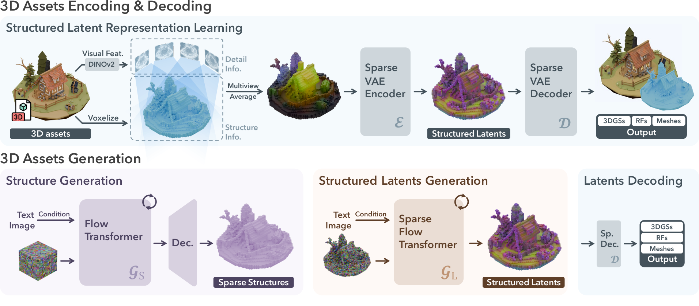

Abstract
SLAT-Studio brings downstream 3D editing to Microsoft TRELLIS and its Structured LATent (SLAT) representation. Given an existing 3D asset (3DGS or mesh) and a text prompt, it performs four tasks: style and material transfer, region editing, inpainting and completion, and interpolation and morphing. Every task is entirely training-free, built by composing TRELLIS's public APIs and subclassing its flow-matching samplers. The vendored TRELLIS submodule is never modified, and an interactive Gradio app exposes every task over a single resident pipeline.
Method
TRELLIS represents a 3D asset as a SLAT: active voxels on a 643 grid, each carrying an 8-channel latent. A two-stage flow-matching process, a sparse-structure stage for the voxels, then a SLAT stage for their latents, is decoded to Gaussians / mesh / radiance field. SLAT-Studio works at this latent level, reusing the frozen models and only changing how they are sampled.

- Encoding bridge. Lifts an external 3DGS into SLAT space, multiview render → DINOv2 tokens → voxelize → frozen VAE encode. Round-trip: 31.3 dB PSNR / 0.94 SSIM, IoU 0.75.
- Style / material transfer. Freeze the voxel coordinates and re-run only the SLAT stage under a new prompt: geometry is preserved, appearance changes.
- Editing & completion (RePaint). A RePaint flow sampler re-noises known voxels from the source at every step while unknown voxels follow the model; a hard composite keeps the rest bit-exact. Completion adds a stage that regrows missing geometry first.
- Morphing. Blends two assets in SLAT space, a fixed-structure appearance morph and a structure-union + occupancy-dissolve schedule, both with exact endpoints.
Style & material transfer
Freeze the structure and re-run only the SLAT stage under a new prompt: geometry is identical, only the material changes. A rustic wooden chest is restyled into solid gold, shown as turntables of the decoded Gaussian splat.
Input, “rustic wooden treasure chest with iron bands”
Restyled, “treasure chest made of solid gold”
Region editing
A selected region (tinted green) is repainted under an edit prompt while voxels outside are re-noised from the source and composited back bit-exact. Here one half of the chest becomes “molten glowing lava” while the other half keeps its original wood, so the boundary is visible head-on. The latent freeze outside the box is exact; the decoded change is concentrated (×10.4 stronger inside the box) but not perfectly contained, which we report honestly.
Inpainting / completion
Unlike editing, completion regrows missing geometry. We carve a region out, then run a two-stage RePaint: stage 1 regrows occupancy with the sparse-structure flow, stage 2 paints latents on the new voxels while survivors keep their bit-exact source latents. The bite is regrown with consistent wood and iron banding.
Interpolation & morphing
Two assets are blended in SLAT space. The fixed-structure appearance morph aligns a target onto the source geometry and interpolates latents, giving a coherent transition with exact endpoints (t = 0 source, t = 1 target). A structure-union + occupancy-dissolve schedule supports cross-shape morphs.
BibTeX
@software{slatstudio2026,
title = {SLAT-Studio: Training-Free Downstream 3D Tasks on Structured Latents},
author = {鄭名翔 and 張媛婷 and 司徒立中 and 何義翔 and 曾紹幃},
year = {2026},
note = {NYCU Computer Vision 2026 Final Project (Group 2). Built on Microsoft TRELLIS Structured LATents (SLAT)},
url = {https://github.com/Sytwu/SLAT-Studio}
}